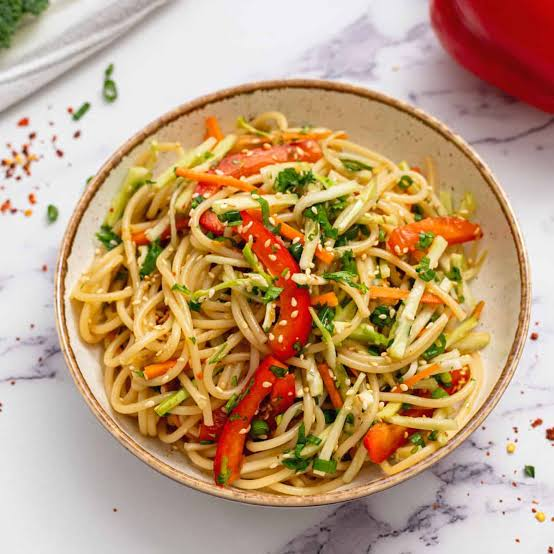

Noodle Salad

This Vietnamese-style noodle salad is my 'too hot to cook' staple. It is bursting with flavor and makes great use of leftover grilled meat or shrimp.
Ingredients
- ¼ cup water, or more to taste
- 3 tablespoons lime juice
- 3 tablespoons fish sauce
- 3 tablespoons brown sugar, or more to taste
Preparation
- Whisk water, lime juice, fish sauce, brown sugar, garlic, ginger, and Sriracha together in a bowl until the sugar is dissolved.
- Bring a large pot of water to a full boil; remove from heat and soak rice noodles in the hot water for 1 minute. Stir to separate the noodles and continue soaking until the noodles are tender, about 3 minutes more. Drain noodles and rinse with cold water until cooled. Shake noodles in colander to drain as much water as possible.
- Mix noodles, cabbage, carrots, shrimp, bean sprouts, cucumber slices, green onions, mint, cilantro, and basil together in a large bowl. Drizzle the dressing over the salad and toss to coat. Top with chopped peanuts.